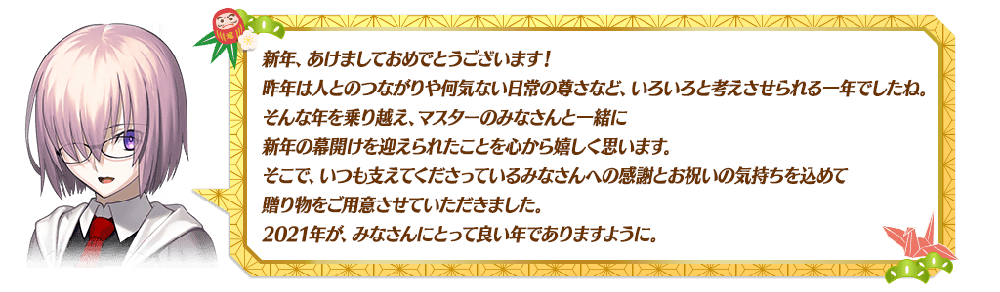
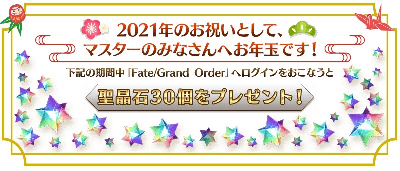
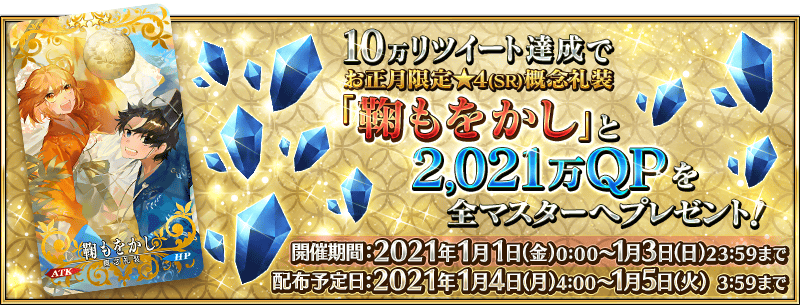
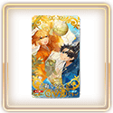
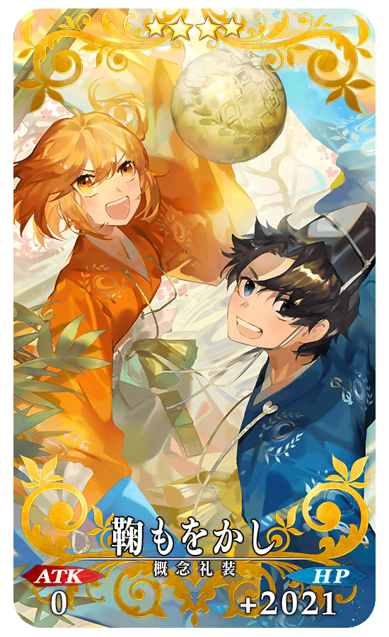
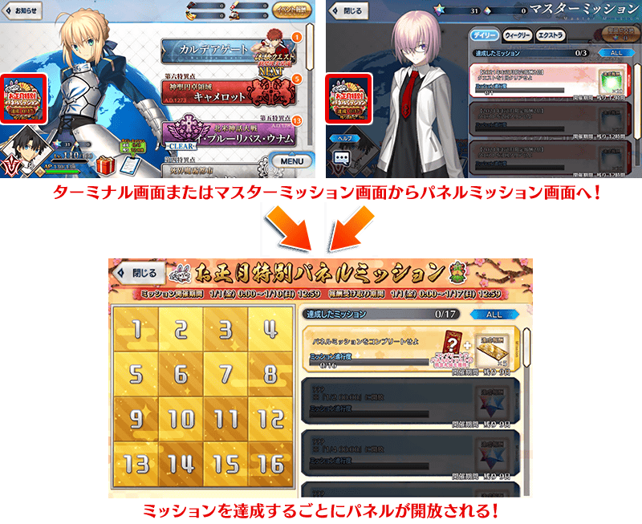
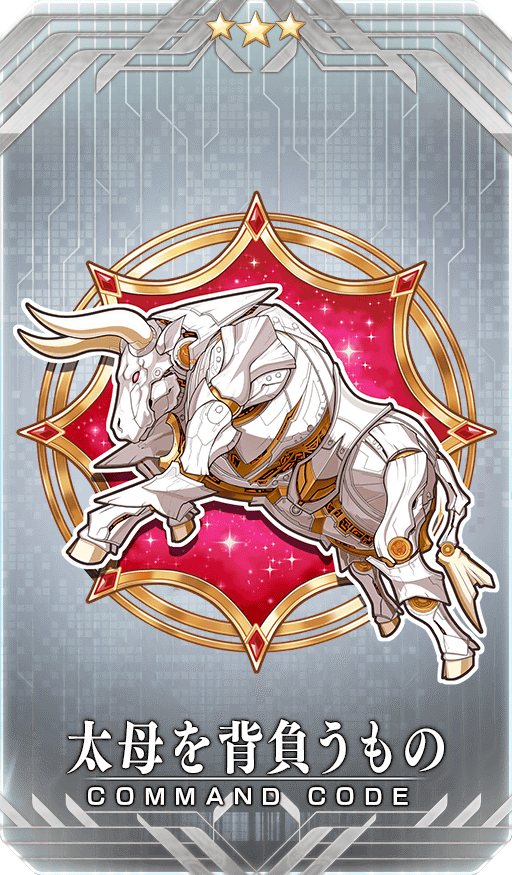
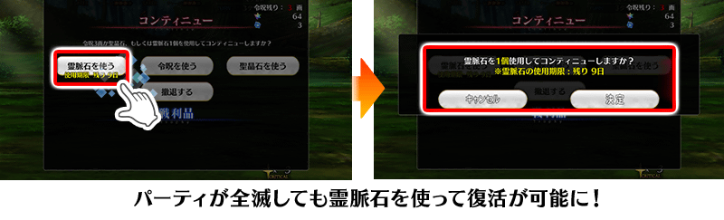

◆舉辦期間◆
2020年12月31日(四) 23:00～1月10日(日) 11:59
※本頁面皆為開發中圖片。會有與實際圖片相異的情況。


◆領取期間◆
2021年1月1日(五) 3:00～1月4日(一) 2:59
上述期間中，在初次登入到「Fate/Grand Order」的時間點，贈予至禮物箱。
◆贈送內容◆
聖晶石 30個
◆贈送對象◆
所有的御主對象
※新御主玩家必須推進至通過「特異點F 炎上汙染都市 冬木 第3節 進行度1」。
※期間內未登入的話無法領取。
※禮物只能領取1次。
為了記念「2021年新年宣傳活動」的舉辦，今年也實施新年三天限定的特別登入獎勵！
本次也贈送聖杯做為
從1月3日(日) 3:00的登入獎勵！
◆舉辦期間◆
2021年1月1日(五) 3:00～1月4日(一) 2:59
※無關登入的次數，會對應登入的時間領取禮物。
◆贈送對象◆
所有的御主對象
※新御主玩家必須推進至通過「特異點F 炎上汙染都市 冬木 第3節 進行度1」。
| 登入時間 | 贈送內容 | ||
|---|---|---|---|
| 1月1日(五) 3:00～ 1月2日(六) 2:59 |

|
稀有稜鏡 1個 | |
| 1月2日(六) 3:00～ 1月3日(日) 2:59 |

|
英靈結晶・流星之芙芙ALL★4(HP) 1張 | |

|
英靈結晶・日輪之芙芙ALL★4(ATK) 1張 | ||
|
1月3日(日) 3:00～ 1月4日(一) 2:59 |

|
聖杯 1個 | |
※禮物只能各領取1次。

在官方推特上方固定顯示的「2021年新年宣傳活動舉辦！」推特轉推數，於下述的期間內達成10萬轉推達成的話，會向所有的御主贈送「★4(SR)鞠もをかし」與2,021萬QP！
■「Fate/Grand Order」官方推特
@fgoproject
◆舉辦期間◆
2020年12月31日(四) 23:00～1月3日(日) 22:59
◆配發預定日◆
2021年1月4日(一) 3:00～1月5日(二) 2:59的期間中，在初次進行登入的時間點，贈予至禮物箱。
◆贈送對象◆
所有的御主對象
※在舉辦期間內達成10萬轉推的情況，新御主玩家必須在配發預定最終日的1月5日(二) 2:59前推進至通過「特異點F 炎上汙染都市 冬木 第3節 進行度1」。
| 達成目標(轉推數) | 達成報酬 | ||
|---|---|---|---|
| 10萬轉推 |  | ★4(SR)鞠もをかし | |

|
2,021萬QP | ||
※在舉辦期間內未到達達成目標轉推數及期間內未登入的情況，無法領取達成報酬。
◆新年限定概念禮裝◆
|  |
★★★★SR |
下述的期間中，舉辦期間限定的「新年特別拼圖板任務」。
「新年特別拼圖板任務」會逐日追加任務追加，達成各任務的話會開放對應的拼圖板，可獲得任務各自對應的報酬。
所有的任務達成的話，可得到包含指令紋章「★3(R)太母を背負うもの」和呼符5張等的豪華報酬！
另外，拼圖板任務全達成的話能獲得「新年特別拼圖板任務」限定的「★4(SR)」記念概念禮裝！
※請注意任務開放前的進行度，不會計算任務開放前。

◆舉辦期間◆
2020年12月31日(四) 23:00～1月10日(日) 11:59
◆領取期間◆
2020年12月31日(四) 23:00～1月17日(日) 11:59
◆「新年特別拼圖板任務」限定 記念概念禮裝◆
|
★★★★SR |
◆2021年新年宣傳活動指令紋章◆
|  |
★★★R |
◆得到新年限定「概念禮裝EXP卡:ロデオ」吧！◆
做為「2021年新年宣傳活動」限定的報酬，能入手可大幅強化概念禮裝的EXP卡！
請務必藉此機會，強化喜愛的概念禮裝吧！
採用GoogleDrive資料夾呈現
◆拼圖板任務◆
| No. | 任務開放時間 | 任務名稱 | 任務達成報酬 | |
|---|---|---|---|---|
| 1 | 1月2日(六) 23:00～ 1月10日(日) 11:59 |
擊倒3位持有『神性』特性的從者 |

|
聖晶石 1個 |
| 概念禮裝EXP卡 ★4(SR)ロデオ 1張 |
||||
| 2 | 1月4日(一) 23:00～ 1月10日(日) 11:59 |
擊倒3位持有『善』屬性的從者 |
|
聖晶石 1個 |
| 概念禮裝EXP卡 ★4(SR)ロデオ 1張 | ||||
| 3 | 1月5日(二) 23:00～ 1月10日(日) 11:59 |
擊倒3名『和風』的從者或人類的敵人 |
|
聖晶石 1個 |
| 概念禮裝EXP卡 ★4(SR)ロデオ 1張 | ||||
| 4 | 1月1日(五) 23:00～ 1月10日(日) 11:59 |
擊倒21名敵人(從者及一部份Boss除外) |
|
聖晶石 1個 |
| 概念禮裝EXP卡 ★4(SR)ロデオ 1張 | ||||
| 5 | 1月3日(日) 23:00～ 1月10日(日) 11:59 |
擊倒3位『幸運A+』的從者 |
|
聖晶石 1個 |
| 概念禮裝EXP卡 ★4(SR)ロデオ 1張 | ||||
| 6 | 1月1日(五) 23:00～ 1月10日(日) 11:59 |
擊倒3名持有『超巨大』特性的敵人 |

|
Quick紋章開啟器 1個 |
| 概念禮裝EXP卡 ★4(SR)ロデオ 1張 | ||||
| 7 | 1月3日(日) 23:00～ 1月10日(日) 11:59 |
靠戰利品收集1個『球(玉)』的道具 |

|
Buster紋章開啟器 1個 |
| 概念禮裝EXP卡 ★4(SR)ロデオ 1張 | ||||
| 8 | 1月4日(一) 23:00～ 1月10日(日) 11:59 |
編入1位『和風』的從者，通過1次任意的關卡 |

|
睿智的業火ALL ★5(SSR) 5張 |
| 概念禮裝EXP卡 ★4(SR)ロデオ 1張 | ||||
| 9 | 1月1日(五) 23:00～ 1月10日(日) 11:59 |
擊倒3名持有『天』之力的敵人 |

|
友情點數 10,000pt |

|
黃金果實 1個 | |||
| 概念禮裝EXP卡 ★4(SR)ロデオ 1張 | ||||
| 10 | 1月5日(二) 23:00～ 1月10日(日) 11:59 |
編入1位持有『善』屬性的從者，通過1次任意的關卡 |

|
英靈結晶・星之芙芙 ALL★3(HP) 5張 |
| 概念禮裝EXP卡 ★4(SR)ロデオ 1張 | ||||
| 11 | 1月2日(六) 23:00～ 1月10日(日) 11:59 |
靠戰利品收集1個『紅色』的道具 |

|
Arts紋章開啟器 1個 |
| 概念禮裝EXP卡 ★4(SR)ロデオ 1張 | ||||
| 12 | 1月1日(五) 23:00～ 1月10日(日) 11:59 |
編入1位持有『神性』特性的從者，通過1次任意的關卡 |
|
黃金果實 1個 |
| 指令紋章 ★3(R)太母を背負うもの 1張 | ||||
| 概念禮裝EXP卡 ★4(SR)ロデオ 1張 | ||||
| 13 | 1月2日(六) 23:00～ 1月10日(日) 11:59 |
靠戰利品收集1個『白色』的道具 |
|
黃金果實 3個 |
| 概念禮裝EXP卡 ★4(SR)ロデオ 1張 | ||||
| 14 | 1月3日(日) 23:00～ 1月10日(日) 11:59 |
靠戰利品收集1個『金色』的道具 |

|
獸之足跡 1個 |
| 概念禮裝EXP卡 ★4(SR)ロデオ 1張 | ||||
| 15 | 1月6日(三) 23:00～ 1月10日(日) 11:59 |
通過1次『山』的自由關卡 |
|
聖晶石 1個 |
| 概念禮裝EXP卡 ★4(SR)ロデオ 1張 | ||||
| 16 | 1月6日(三) 23:00～ 1月10日(日) 11:59 |
編入1位持有『秩序』屬性的從者，通過1次任意的關卡 |

|
英靈結晶・太陽之芙芙 ALL★3(ATK) 5張 |
| 概念禮裝EXP卡 ★4(SR)ロデオ 1張 | ||||
| 拼圖板任務全達成 |

|
呼符 5張 | ||

|
記念概念禮裝★4(SR)??? | |||
※請注意舉辦期間與領取期間有所差異。 ※請注意與每週日23:00更新的普通任務(Weekly)不同欄位，超過領取期間的話無法入手報酬。 ※就算達成「新年特別拼圖板任務」，也不會計算在普通任務(Weekly)的任務進行度。 ※根據主線關卡的進行度會有無法達成「新年特別拼圖板任務」的情況。
下述的期間中，舉辦「每日任務新年限定版」。
「每日任務新年限定版」中，可靠「每日任務」的報酬所獲得的魔力稜鏡數量變成2倍！
◆舉辦期間◆
2020年12月31日(四) 23:00～1月7日(四) 22:59
◆每日任務新年限定版◆
| 任務名稱 | 任務達成報酬 | |
|---|---|---|
| 【2021年新年限定報酬2倍】 通過1次關卡 |

|
魔力稜鏡 20個 |
| 【2021年新年限定報酬2倍】 通過2次關卡 |
|
魔力稜鏡 20個 |
| 【2021年新年限定報酬2倍】 通過3次關卡 |
|
魔力稜鏡 20個 |
※「每日任務」會在每日23:00更新。 ※所有的關卡都是計算的對象。 ※每日任務的報酬會在任務達成時自動領取。不需要在任務清單「領取」。
在迦勒底之門內每日出現的關卡「蒐集種火」與「打開寶物庫之門」的消耗AP以期間限定變成1/2！(就算在戰鬥中撤退的情況，也會是同様的消耗量)
◆舉辦期間◆
2020年12月31日(四) 23:00～1月10日(日) 11:59
◆對象關卡◆
・蒐集種火
蒐集種火<槍・殺篇>初級、中級、上級、超級
蒐集種火<劍・騎篇>初級、中級、上級、超級
蒐集種火<弓・術篇>初級、中級、上級、超級
蒐集種火<隨機篇>初級、中級、上級、超級
・寶物庫
打開寶物庫之門 初級、中級、上級、超級
【打開寶物庫之門、蒐集種火 關卡的難易度等】
| 難易度 | 推薦Lv | 消耗AP |
|---|---|---|
| 初級 | 5 | 10→5 |
| 中級 | 10 | 20→10 |
| 上級 | 25 | 30→15 |
| 超級 | 40 | 40→20 |
下述的期間中，在進行從者及概念禮裝的強化時，大成功(經驗值2倍加成)・極大成功(經驗值3倍加成)發生機率以期間限定變成2倍！
請務必藉此機會強化喜愛的從者和概念禮裝吧！
◆舉辦期間◆
2020年12月31日(四) 23:00～1月10日(日) 11:59

2020年11月25日(三) 17:00～12月31日(四) 22:59期間實施的「主線關卡第1部(從特異點F到終局特異點)與第2部(從第1章到第5章 奧林帕斯)的消耗AP1/4」延長至下述的期間。
(就算在戰鬥中撤退的情況，也會是同様的消耗量)
尚未通過主線關卡的御主，請務必活用此機會！
◆舉辦期間◆
2020年12月31日(四) 23:00～1月10日(日) 11:59
◆對象關卡◆
主線關卡第1部(從特異點F到終局特異點)
主線關卡第2部(從第1章到第5章 奧林帕斯)
※現在主線關卡第2部 第5章 亞特蘭提斯以前的AP消耗量為永久變成1/2的狀態。因此，宣傳活動結束後，該主線關卡的AP消耗量會是1/2。 ※請注意亞種特異點(從Ⅰ到Ⅳ)、自由關卡為對象外。
在主線故事(從第1部 序章到第2部 第5.5章)的戰鬥敗北時，可消耗後回歸戰鬥的道具「靈脈石」的使用期限及領取登入獎勵「靈脈石」的期間延長至下述的期間。
「靈脈石」在下述期間中，初次登入時會做為登入獎勵領取1遍。
另外，請注意在延長期間前領取過登入獎勵「靈脈石」的情況，無法再度領取。
敬請注意超過使用期限「靈脈石」會消失。
※請注意以自2020年12月31日(四) 22:59前開始關卡的狀態跨越2020年12月31日(四) 23:00的情況，在通過或撤退關卡前無法使用「靈脈石」。
◆道具使用期限＆登入獎勵實施期間◆
2020年12月31日(四) 23:00～1月10日(日) 11:59
◆登入獎勵對象◆
所有的御主對象
※新御主玩家必須推進至通過「特異點F 炎上汙染都市 冬木 第3節 進行度1」。
◆登入獎勵內容◆
| 道具名 | 個數 | |
|---|---|---|

|
靈脈石 | 3個 |

※「靈脈石」只可在包含亞種特異點的主線故事中使用。 ※敬請注意無法在期間限定活動及Main Interlude使用。
◆能使用的對象關卡◆
主線故事第1部(到終局特異點)
亞種特異點(從Ⅰ到Ⅳ)
主線故事第2部(到第5.5章)
以期間限定舉辦千子村正的體驗關卡！
可迎接「★5(SSR)千子村正」做為支援成員，挑戰期間限定的關卡！
別錯過體驗從者技能與寶具的機會！
※請注意在千子村正的體驗關卡沒有文字冒險部份。
◆千子村正體驗關卡舉辦期間◆
2020年12月31日(四) 23:00～1月15日(五) 11:59
◆開放條件◆
滿足以下條件的御主才能參加
・通過「特異點F 炎上汙染都市 冬木」
◆關卡通過報酬◆
呼符 1張

自2020年12月31日(四) 23:00，在起跑衝刺宣傳活動的登入獎勵，以期間限定追加特別獎勵！ 下述期間中，第7天的獎勵變成2倍，以期間限定追加聖晶石召喚最大22次份的聖晶石30個與呼符10張。
※(聖晶石召喚最大22次份)限在同一個聖晶石召喚進行的情況。
◆舉辦期間◆
2020年12月31日(四) 23:00～1月15日(五) 2:59
◆起跑衝刺登入獎勵的內容◆
| 總登入天數 | 入手登入獎勵 |
|---|---|
| 第1天 |
聖晶石 2個 呼符 5張 友情點數 2,000pt 10萬QP 睿智的猛火ALL★4(SR) 20張 黃金果實 1個 |
| 第2天 |
聖晶石 3個 呼符 5張 友情點數 2,000pt 10萬QP 睿智的猛火ALL★4(SR) 20張 黃金果實 1個 |
| 第3天 |
聖晶石 5個 呼符 5張 友情點數 2,000pt 10萬QP 睿智的猛火ALL★4(SR) 20張 黃金果實 1個 |
| 第4天 |
聖晶石 7個 友情點數 2,000pt 10萬QP 睿智的猛火ALL★4(SR) 20張 黃金果實 1個 |
| 第5天 |
聖晶石 10個 友情點數 2,000pt 10萬QP 睿智的猛火ALL★4(SR) 20張 黃金果實 1個 |
| 第6天 |
聖晶石 15個 友情點數 2,000pt 10萬QP 睿智的猛火ALL★4(SR) 20張 黃金果實 1個 |
| 第7天 |
【期間限定増量】 聖晶石 60個 呼符 20張 友情點數 4,000pt 200萬QP 睿智的猛火ALL★4(SR) 40張 黃金果實 20個 |
| 第8天 |
聖晶石 5個 友情點數 2,000pt 10萬QP 睿智的猛火ALL★4(SR) 20張 黃金果實 1個 |
| 第9天 |
聖晶石 7個 友情點數 2,000pt 10萬QP 睿智的猛火ALL★4(SR) 20張 黃金果實 1個 |
| 第10天 |
聖晶石 9個 友情點數 2,000pt 10萬QP 睿智的猛火ALL★4(SR) 20張 黃金果實 1個 |
| 第11天 |
聖晶石 12個 友情點數 2,000pt 10萬QP 睿智的猛火ALL★4(SR) 20張 黃金果實 1個 |
| 第12天 |
聖晶石 15個 友情點數 2,000pt 10萬QP 睿智的猛火ALL★4(SR) 20張 黃金果實 1個 |
| 第13天 |
聖晶石 25個 友情點數 2,000pt 10萬QP 睿智的猛火ALL★4(SR) 20張 黃金果實 1個 |
| 第14天 |
聖晶石 50個 呼符 10張 友情點數 2,000pt 100萬QP 睿智的猛火ALL★4(SR) 20張 黃金果實 10個 |
※登入獎勵會在每天3:00配發。 ※表格中的紅字為期間限定的特別獎勵。 ※在舉辦期間內未進行第7天登入的情況，無法領取2倍的獎勵。
對一定期間未登入的御主對象，以期間限定舉辦「回歸登入獎勵」。
在下述期間中，7天內連續登入的話，贈送聖晶石30個(聖晶石召喚最大11次份)與對從者的養成有用的各種道具！
※(聖晶石召喚最大11次份)限在同一個聖晶石召喚進行的情況。
◆舉辦期間◆
2020年12月31日(四) 21:00～2021年1月15日(五) 2:59
※期間內未登入的話無法領取。
◆贈送對象◆
滿足以下所有條件的御主對象
・2020年12月1日(二) 23:00～12月31日(四) 21:59的期間贈送對象
・2021年1月14日(四) 2:59前通過「特異點F 炎上汙染都市 冬木」
※上述時間前，在管理室(ターミナル)畫面的關卡橫幅必須要有「CLEAR」的文字顯示。
【回歸登入獎勵合計】 ・聖晶石 30個(聖晶石召喚最大11次份) ・友情點數 合計14,000pt(友情點數召喚70次份) ・睿智的猛火ALL★4(SR) 16張 ・黃金果實 16個
◆回歸登入獎勵的內容◆
| 連續登入天數 | 贈送內容 |
|---|---|
| 第1天 |
聖晶石 1個 友情點數 2,000pt 睿智的猛火ALL★4(SR) 1張 黃金果實 1個 |
| 第2天 |
聖晶石 1個 友情點數 2,000pt 睿智的猛火ALL★4(SR) 1張 黃金果實 1個 |
| 第3天 |
聖晶石 2個 友情點數 2,000pt 睿智的猛火ALL★4(SR) 1張 黃金果實 1個 |
| 第4天 |
聖晶石 3個 友情點數 2,000pt 睿智的猛火ALL★4(SR) 1張 黃金果實 1個 |
| 第5天 |
聖晶石 5個 友情點數 2,000pt 睿智的猛火ALL★4(SR) 1張 黃金果實 1個 |
| 第6天 |
聖晶石 8個 友情點數 2,000pt 睿智的猛火ALL★4(SR) 1張 黃金果實 1個 |
| 第7天 |
聖晶石 10個 友情點數 2,000pt 睿智的猛火ALL★4(SR) 10張 黃金果實 10個 |
※第1天的回歸登入獎勵自2020年12月31日(四) 21:00以後配發。 ※之後的的回歸登入獎勵會在每天3:00配發。 ※連續登入天數中斷後，無法領取之後的禮物。 ※最多能領取7次，但根據開始遊戲的時間點，可能無法到此上限。
以期間限定在達文西工房的「魔力稜鏡交換」追加下述的道具。
◆道具交換期間◆
2020年12月31日(四) 23:00～1月10日(日) 11:59
| 追加道具 | 能交換次數 | 1次交換所需的 魔力稜鏡數 |
|
|---|---|---|---|

|
【2021年新年限定】 壓歲錢福袋2021 ※關於封入物的詳情在此 |
1次 | 20個 |
|
【2021年新年限定】 概念禮裝EXP卡★4(SR)ロデオ |
10次 | 20個 | |
|
|
【2021年新年限定】 Quick紋章開啟器 |
3次 | 50個 |
|
|
【2021年新年限定】 Arts紋章開啟器 |
3次 | 50個 |
|
|
【2021年新年限定】 Buster紋章開啟器 |
3次 | 50個 |

|
【2021年新年限定】 紋章移除器 |
3次 | 100個 |
|
|
【2021年新年限定】 呼符 |
10次 | 10個 |

|
【2021年新年限定】 睿智的猛火ALL★4(SR)10張組 |
10次 | 20個 |
|
|
【2021年新年限定】 英靈結晶・星之芙芙ALL★3(HP) |
30次 | 5個 |
|
|
【2021年新年限定】 英靈結晶・太陽之芙芙ALL★3(ATK) |
30次 | 5個 |
▶關於壓歲錢福袋2021
可在達文西工房的「魔力稜鏡交換」以期間限定交換的「壓歲錢福袋福袋2021」，包含以下的道具。
可開放絆等級上限的道具「迦勒底的夢火」和可大幅強化概念禮裝的新年限定EXP卡也登場！
◆「壓歲錢福袋2021」封入物一覧◆
・迦勒底的夢火 1個
・概念禮裝EXP卡★4(SR)ロデオ 1張
・1,000萬QP
・友情點數 10,000pt
※迦勒底的夢火、QP、友情點數會直接賦予至持有道具。
不會送至禮物箱。
以期間限定在達文西工房的「稀有稜鏡交換」追加下述的道具。
◆道具交換期間◆
2020年12月31日(四) 23:00～1月10日(日) 11:59
| 追加道具 | 能交換次數 | 1次交換所需的 稀有稜鏡數 |
|
|---|---|---|---|
|
|
【2021年新年限定】 獸之足跡 |
1次 | 1個 |

|
【2021年新年限定】 迦勒底的夢火 |
1次 | 3個 |
|
|
【2021年新年限定】 紋章移除器 |
3次 | 1個 |

|
【2021年新年限定】 傳承結晶 |
1次 | 5個 |
|
|
【2021年新年限定】 英靈結晶・流星之芙芙ALL★4(HP) |
1次 | 3個 |
|
|
【2021年新年限定】 英靈結晶・日輪之芙芙ALL★4(ATK) |
1次 | 3個 |
|
|
【2021年新年限定】 友情點數 20,000pt |
5次 | 1個 |
為了記念「2021年新年宣傳活動」的舉辦，在達文西工房的「稀有稜鏡交換」永久追加於「2020年新年宣傳活動」登場的概念禮裝「★4(SR)独楽の舞い踊り」。
◆追加時間◆
2020年12月31日(四) 23:00～

|
★★★★SR |
◆追加道具(永久)◆
| 追加道具 | 能交換次數 | 1次交換所需的 稀有稜鏡數 |
|---|---|---|
| ★4(SR)独楽の舞い踊り | 1次 | 3個 |
※追加到「稀有稜鏡交換」的「★4(SR)独楽の舞い踊り」為永久，沒有交換期限。 ※關於已經持有「★4(SR)独楽の舞い踊り」的玩家，剩餘次數的顯示會是「0次」，無法交換。 ※在「稀有稜鏡交換」入手「★4(SR)独楽の舞い踊り」會是最高等級。
其他還有、
・福袋召喚2021(紅白×三騎士・四騎士・EXTRA別)
・New Year 2021Pick Up召喚(每日交替)
以期間限定舉辦中！
關於詳情，請自下述橫幅確認。
■「福袋召喚2021(紅白×三騎士・四騎士・EXTRA別)」詳細情報

■「New Year 2021Pick Up召喚(每日交替)」詳細情報